La propiedad
Los exteriores
Un parque de una hectárea, un patio bretón, un horno de pan y animales en libertad.
Vista del parque de una hectárea desde el porche acristalado. Una parte está ocupada por una zona de descanso (juegos infantiles) y un espacio para pícnic (barbacoa, mesa de comidas).
Detrás de la casa encontrará un horno de pan y el porche acristalado.
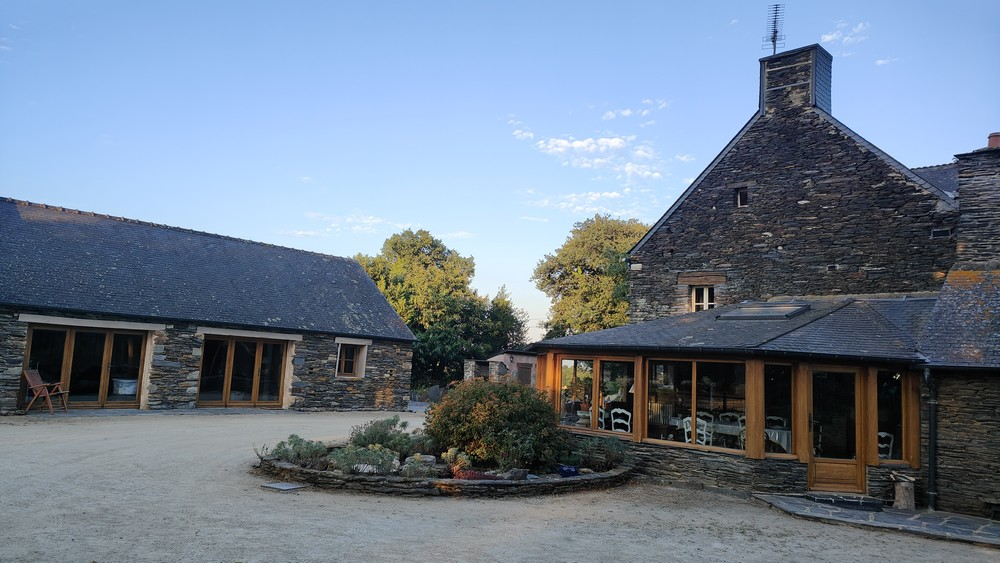
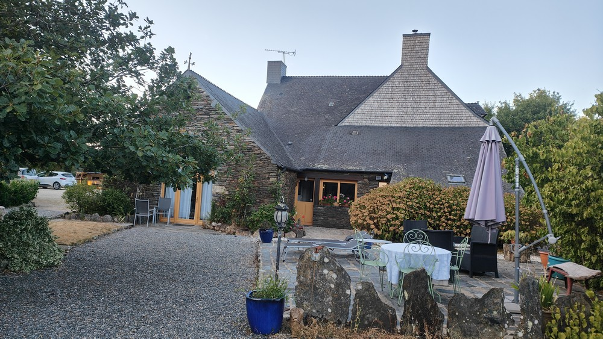
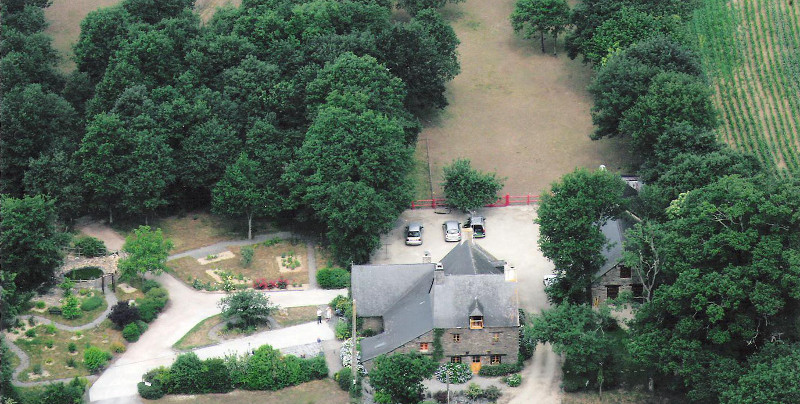
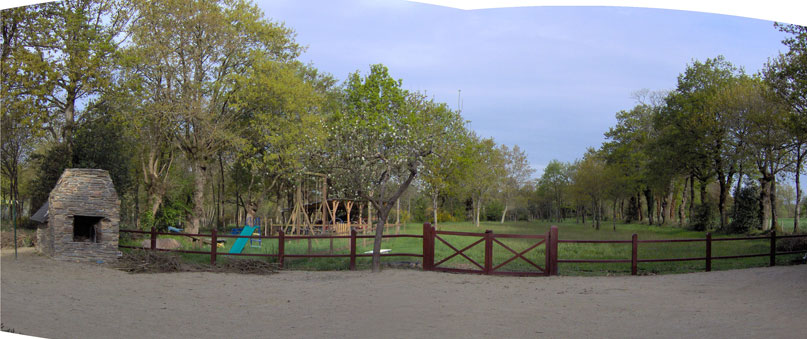
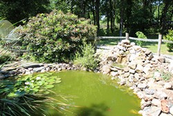
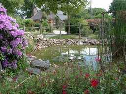
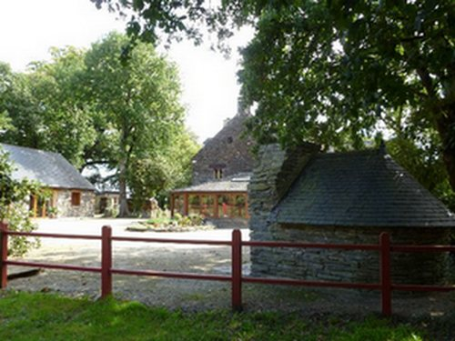
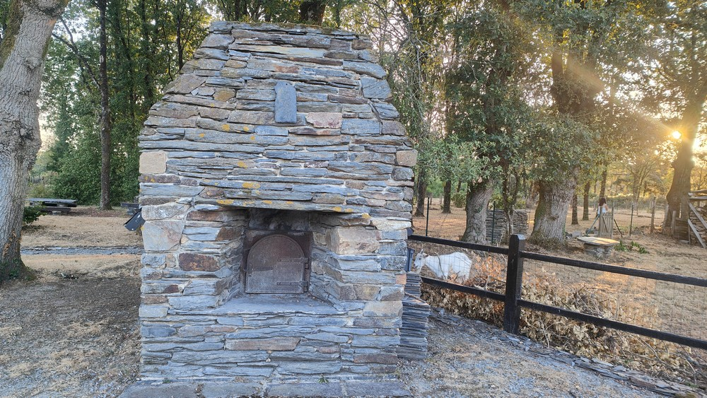
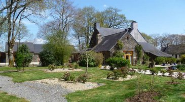
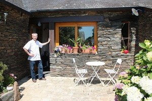
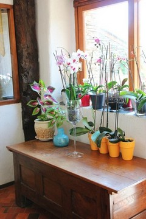
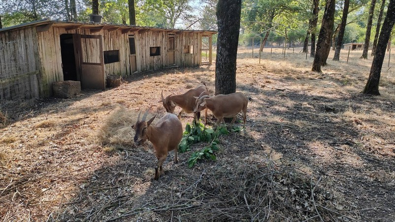
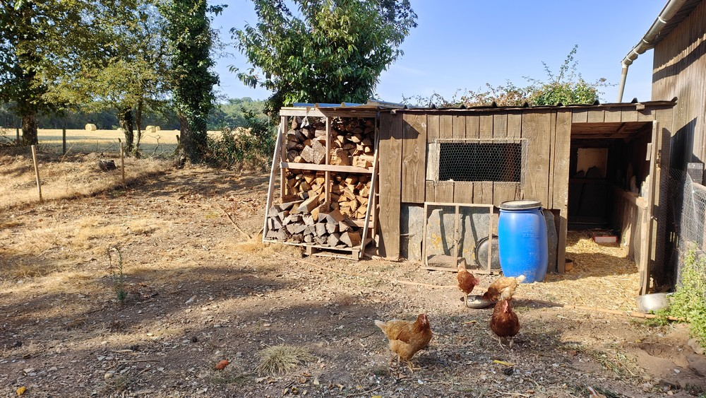